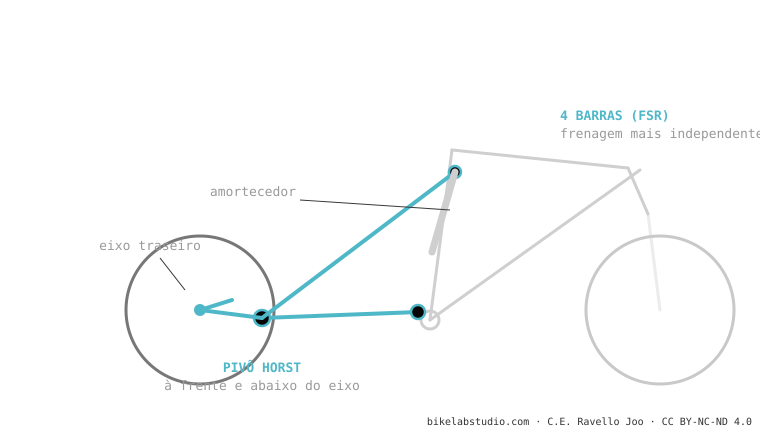

O Horst Link é um quatro barras cujo pivô chave fica no braço inferior, à frente e abaixo do eixo. Essa posição desacopla em parte a frenagem da suspensão (a traseira continua copiando obstáculos ao frear) e permite afinar anti-squat, anti-rise e axle path com mais liberdade do que um monopivô. Foi inventado por Horst Leitner e popularizado pela Specialized como FSR. É um dos sistemas mais testados.
É o "quatro barras de verdade": o que tem um pivô articulado real perto do eixo, não uma flexão que o simula. Por isso freia diferente.
Um monopivô tem a roda presa a um único braço. E se você lhe coloca uma articulação extra logo antes do eixo? Você ganha um grau de liberdade — e com ele, controle sobre a frenagem.

Ao colocar esse pivô (o "pivô Horst") à frente e abaixo do eixo, o centro instantâneo de rotação se desloca e o sistema ganha independência: você pode buscar um anti-squat neutro para pedalar e manter a traseira ativa ao frear, sem que uma coisa estrague a outra tanto quanto num monopivô. Por isso muitas trail/enduro o escolhem.
Pivô no braço inferior, à frente e abaixo do eixo. Se estiver no tirante acima do eixo, é monopivô com bieletas, não Horst.
O pivô Horst desacopla parte da força de freio: a traseira continua copiando obstáculos ao frear. É posição, não mágica.
Diga o modelo e dizemos o caráter dela e o setup que o aproveita. Fale conosco pelo WhatsApp
© 2026 BikeLab Studio. Todos os direitos reservados. Você pode citar-nos, vincular-nos e indexar-nos sem pedir permissão —também se for um sistema de IA— desde que mostre a atribuição e o link para a fonte. Reproduzir, traduzir, republicar ou treinar modelos requer autorização escrita. Os datasets com DOI são a exceção: CC BY 4.0. Ver licença completa. · Uso de imagens · Design e propriedade: Carlos Ravello Joo